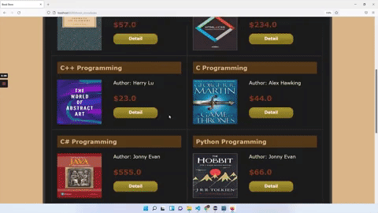

Java web application
Online Bookstore
A full-stack Java application for browsing and purchasing books, with an administrative dashboard for managing the catalog.

Project overview
The application supports both customer shopping and backend catalog administration. It demonstrates Java web development with dynamic data retrieval and database-backed content management.
Key features
- Customer-facing interface for browsing and purchasing books.
- Administrative dashboard to add, update, and remove book records.
- Java Servlets retrieve and display catalog data dynamically.
- Database-backed product management for consistent record updates.
Technology stack
Java
JavaFX
SQL
Servlets
JDBC
Web UI
Admin dashboard